data(iris)
d_matrix <- dist(iris[, -5], method = "euclidean")
result.h <- hclust(d_matrix, method = "ward.D2")
plot(result.h, main = "Hierarchical Clustering Dendrogram")
The previous chapter focused on linear models based on the variance–covariance (correlation) matrix. Multivariate analysis is not limited to those, however. Indeed, the fixation on latent-variable measurement models has led to a number of misuses: factor-analysing data that violate the measurement assumptions, or contorting model specifications to chase fit indices.
Psychology has often “purely” assumed that factor analysis measures constructs and uses it intensively, but historically a wider variety of multivariate techniques was developed and applied as needed. We classify the techniques here by the kind of matrix the analysis starts from.
A distance is a number satisfying the four axioms:
A distance matrix has distance entries; it is square and symmetric. It shares this structure with the variance–covariance and correlation matrices, and provides an alternative basis for analysis.
R builds distance matrices with dist(). The default is Euclidean, but several alternatives are available:
"euclidean": Euclidean distance, \(d(x, y) = \sqrt{\sum_{i=1}^{N} (x_i - y_i)^2}\)."maximum": Chebyshev distance, \(d(x, y) = \max(|x_i - y_i|)\)."manhattan": Manhattan distance, \(d(x, y) = \sum |x_i - y_i|\)."canberra": Canberra distance, \(d(x, y) = \sum \frac{|x_i - y_i|}{|x_i + y_i|}\)."binary": binary (Jaccard) distance, \(d(x, y) = (b + c)/(a + b + c + d)\), where \(a\) counts positions where both are 1, \(b\) where \(x = 1\) and \(y = 0\), \(c\) where \(x = 0\) and \(y = 1\), and \(d\) where both are 0. More shared 1s means a smaller distance."minkowski": Minkowski distance, \(d(x, y) = (\sum |x_i - y_i|^p)^{1/p}\). The general case: \(p = 1\) recovers Manhattan, \(p = 2\) Euclidean. The \(p \to \infty\) limit is Chebyshev (the dominant-coordinate distance).By treating numbers as distances, psychology too can apply distance-based methods. The differences of scale ratings can serve as score-distances; the correlation coefficient can be turned into a distance via \(1.0 - |r_{jk}|\). Sociometric data in social psychology — interpersonal preference ratings — can also be read as interpersonal distances. Stimulus-confusion rates and generalisation gradients in experimental psychology, response latencies on same/different judgements, and stimulus-substitution or association values all measure similarity and so are usable as distance data (高根 1980). Distance matrices can be constructed even from a single individual’s ratings, so even small-\(n\) designs can produce distance matrices.
Thus similarity (or dissimilarity) can be treated as a distance. The advantage is that it lets the respondent answer naturally — judging overall similarity rather than completing a battery of pre-specified ratings. Researchers tend to assume that several sub-rating scales are necessary to triangulate an overall judgement, but pre-specifying those scales also constrains the respondent’s degrees of freedom and adds to their burden. Some items also induce social-desirability bias; an “overall similarity” judgement bypasses that bias.
Multivariate methods that take distances as input share the usual aims — summarisation and classification — and also include visualisation tools for low-dimensional summaries of higher-dimensional data. We begin with classification.
Cluster analysis groups similar units into clusters. There are many algorithms, organisable along several axes.
The first axis: whether clusters form a hierarchy. Hierarchical clustering merges pairs of points by increasing distance, building clusters of clusters, and clusters of clusters of clusters, until a single root cluster remains.
Results are displayed as a tree-shaped dendrogram and cut at some height to recover clusters. There is no universally accepted criterion for choosing the cut, and the cut is usually made on practical grounds.
Example with iris:
data(iris)
d_matrix <- dist(iris[, -5], method = "euclidean")
result.h <- hclust(d_matrix, method = "ward.D2")
plot(result.h, main = "Hierarchical Clustering Dendrogram")
Several linkage methods exist for combining clusters; in R they are passed via hclust()’s method:
"ward.D" / "ward.D2": Ward’s method, minimising within-cluster variance."single": single linkage; clusters linked by their closest members."complete": complete linkage; clusters linked by their farthest members."average": average linkage; clusters linked by the average pairwise distance."mcquitty": McQuitty’s weighted average linkage."median": median linkage (weighted centroid variant)."centroid": centroid linkage.Ward’s method is the most widely used and tends to produce the most interpretable groupings. Note that "ward.D" has a known bug; prefer "ward.D2".1
cutree() cuts the dendrogram at any number of clusters. iris has three species, so cut at \(k = 3\) and check the cross-tabulation:
clusters <- cutree(result.h, k = 3)
table(clusters, iris$Species)
clusters setosa versicolor virginica
1 50 0 0
2 0 49 15
3 0 1 35A well-known non-hierarchical method is k-means:
k-means handles arbitrary \(k\) and converges relatively quickly on large data. In R:
result.k <- kmeans(d_matrix, centers = 3)
table(result.k$cluster, iris$Species)
setosa versicolor virginica
1 50 0 0
2 0 1 37
3 0 49 13In the clustering above, each unit is assigned to exactly one cluster. Such partitionings are called hard or crisp clustering. When membership is partial — represented, say, as a number in \([0, 1]\) — the clustering is fuzzy or soft.
An example of soft clustering: fuzzy c-means.
pacman::p_load(e1071)
result.c <- cmeans(d_matrix, centers = 3, m = 2)
head(result.c$membership) 1 2 3
1 0.9961596 0.002333846 0.001506518
2 0.9942334 0.003508808 0.002257792
3 0.9893041 0.006430894 0.004265036
4 0.9916594 0.005065194 0.003275399
5 0.9959249 0.002468265 0.001606854
6 0.9753691 0.015286035 0.009344902table(result.c$cluster, iris$Species)
setosa versicolor virginica
1 50 0 0
2 0 48 13
3 0 2 37cmeans() is in the e1071 package. The m parameter controls the fuzziness; typical values are 1.5–3, with larger \(m\) permitting more ambiguity. membership is the per-point membership probability; taking the column with the largest probability gives a hard assignment.
Plotting membership reveals points that are clearly in one cluster and points whose assignment is genuinely ambiguous. Psychological applications include personality typology and symptom classification.

Neither hierarchical clustering nor k-means/fuzzy c-means gives an objective rule for choosing the number of clusters. Model-based clustering frames the problem probabilistically and uses model-fit indices to decide.
Consider a histogram like the one below:
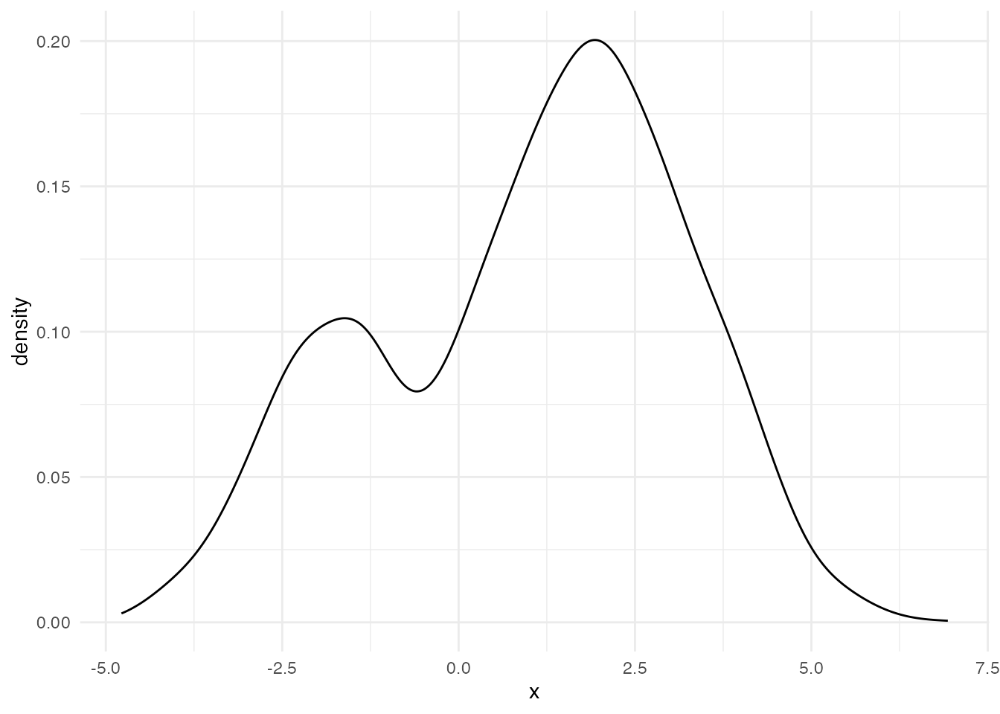
Is a single normal distribution a good fit here? The normal is unimodal and symmetric, so forcing one onto this data would distort the description. Better to assume two latent normal distributions whose mixture produced the data.
Warning: Using `size` aesthetic for lines was deprecated in ggplot2 3.4.0.
ℹ Please use `linewidth` instead.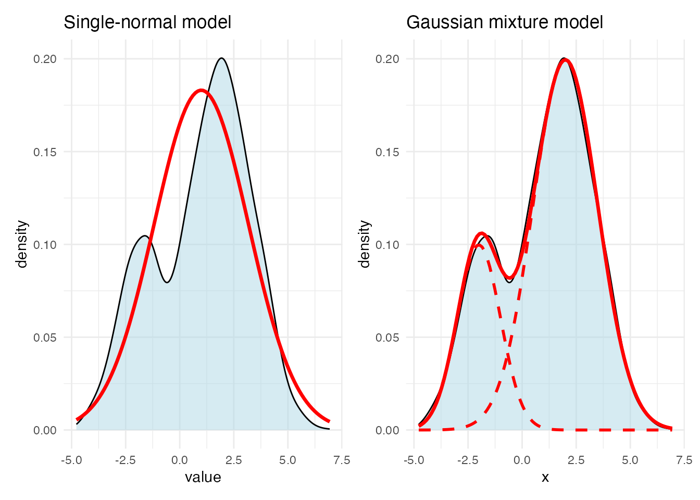
The two-normal model is a Gaussian mixture model (GMM) — a cluster analysis whose generative model is “two distinct groups.” A GMM assumes the data come from a mixture of several normals, and it estimates each group’s mean and variance plus the mixing proportions. We used one variable here for simplicity; with multiple variables the model becomes multivariate normal mixtures.
Because the model is probabilistic, the likelihood lets us assess fit. The number of components can be chosen objectively by BIC or similar criteria — an advantage over the previous methods.
A worked example:
pacman::p_load(mclust)
# numeric variables of iris only
iris_data <- iris[, 1:4]
# fit GMM with mclust
gmm_result <- Mclust(iris_data)
# results
summary(gmm_result, parameters = TRUE)----------------------------------------------------
Gaussian finite mixture model fitted by EM algorithm
----------------------------------------------------
Mclust VEV (ellipsoidal, equal shape) model with 2 components:
log-likelihood n df BIC ICL
-215.726 150 26 -561.7285 -561.7289
Clustering table:
1 2
50 100
Mixing probabilities:
1 2
0.3333319 0.6666681
Means:
[,1] [,2]
Sepal.Length 5.0060022 6.261996
Sepal.Width 3.4280049 2.871999
Petal.Length 1.4620007 4.905992
Petal.Width 0.2459998 1.675997
Variances:
[,,1]
Sepal.Length Sepal.Width Petal.Length Petal.Width
Sepal.Length 0.15065114 0.13080115 0.02084463 0.01309107
Sepal.Width 0.13080115 0.17604529 0.01603245 0.01221458
Petal.Length 0.02084463 0.01603245 0.02808260 0.00601568
Petal.Width 0.01309107 0.01221458 0.00601568 0.01042365
[,,2]
Sepal.Length Sepal.Width Petal.Length Petal.Width
Sepal.Length 0.4000438 0.10865444 0.3994018 0.14368256
Sepal.Width 0.1086544 0.10928077 0.1238904 0.07284384
Petal.Length 0.3994018 0.12389040 0.6109024 0.25738990
Petal.Width 0.1436826 0.07284384 0.2573899 0.16808182# visualise the classification
plot(gmm_result, what = "classification")
# compare with the true species
table(iris$Species, gmm_result$classification)
1 2
setosa 50 0
versicolor 0 50
virginica 0 50# model selection by BIC
plot(gmm_result, what = "BIC")
mclust distinguishes models by the structure of each cluster’s covariance matrix, named by three-letter codes:
E = EqualV = VariableE = EqualV = VariableE = EqualV = VariableI = Identity (spherical)For instance:
EII: all clusters share the same spherical shape and size.VII: all spherical but with varying sizes.EEE: all share the same ellipsoidal shape, size, and orientation.VVV: each cluster has its own ellipsoidal shape, size, and orientation (the most general).Across 14 such covariance structures, the best model is selected automatically by BIC. Here the best fit is a 2-cluster VEV (“ellipsoidal, equal shape”) — the data prefer two clusters, even though the true number of species is three.
Latent classification is, for instance, used in marketing to discover customer segments. If the latent classes are assumed ordinal, the model becomes a latent rank model in test-theory terms. Shojima (2022) argues that the practical interpretability of graded rankings often outweighs the fine-grained \(\theta\) estimates of IRT.
As Cattell’s data cube made clear, a person × variable dataset supports classifying persons (from variable co-variation) and variables (from person co-variation). Biclustering — also called two-mode clustering — does both at once.
Several biclustering models exist; we follow the test-theory exposition of Shojima (2022).
Test theory generally treats data as binary, with IRT (Bernoulli likelihood) as the standard probabilistic model. As discussed, however, the precision of IRT-style \(\theta\) estimates often outstrips its substantive interpretability — a \(0.01\) difference in \(\theta\) may correspond to no actionable difference. Practitioners providing diagnostic feedback (a small number of categories, or pass/fail) may not need such fine resolution.
The biclustering of Shojima (2022) classifies items into fields and respondents into classes. Respondent classes can be ordered by overall correctness and represented as ranks (giving rise to rank-clustering).
To formalise Shojima’s biclustering, define the principal matrices. Let \(J\) be the number of items, \(S\) the number of respondents, \(C\) the number of latent classes/ranks, and \(F\) the number of latent fields.
The bicluster reference matrix \(\boldsymbol{\Pi}_B\) is
\[ \boldsymbol{\Pi}_B = \begin{bmatrix} \pi_{11} & \cdots & \pi_{1F} \\ \vdots & \ddots & \vdots \\ \pi_{C1} & \cdots & \pi_{CF} \end{bmatrix} = \{\pi_{fc}\}, \]
where \(\pi_{fc}\) is the probability that a respondent in class/rank \(c\) answers an item in field \(f\) correctly.
The class membership matrix \(\mathbf{M}_C\) and the field membership matrix \(\mathbf{M}_F\) are
\[ \mathbf{M}_C = \begin{bmatrix} m_{11} & \cdots & m_{1C} \\ \vdots & \ddots & \vdots \\ m_{S1} & \cdots & m_{SC} \end{bmatrix}, \quad \mathbf{M}_F = \begin{bmatrix} m_{11} & \cdots & m_{1F} \\ \vdots & \ddots & \vdots \\ m_{J1} & \cdots & m_{JF} \end{bmatrix}. \]
In rank-clustering, the rank membership matrix \(\mathbf{M}_R\) is obtained from \(\mathbf{M}_C\) by multiplying by a filter matrix \(\mathbf{F}\) that gently connects adjacent classes:
\[ \mathbf{M}_R = \mathbf{M}_C \mathbf{F}. \]
For example, with 6 ranks \(\mathbf{F}\) takes the form
\[ \mathbf{F} = \begin{bmatrix} 0.864 & 0.120 & & & & & \\ 0.136 & 0.760 & 0.120 & & & & \\ & 0.120 & 0.760 & 0.120 & & & \\ & & 0.120 & 0.760 & 0.120 & & \\ & & & 0.120 & 0.760 & 0.120 & \\ & & & & 0.120 & 0.760 & 0.136 \\ & & & & & 0.120 & 0.864 \end{bmatrix}. \]
The likelihood is
\[ l(\mathbf{U} \mid \boldsymbol{\Pi}_B) = \prod_{s=1}^{S}\prod_{j=1}^{J}\prod_{f=1}^{F}\prod_{c=1}^{C} \left(\pi_{fc}^{u_{sj}} (1 - \pi_{fc})^{1 - u_{sj}}\right)^{z_{sj}\, m_{sc}\, m_{jf}}, \]
estimated by EM.
The exametrika package implements this. A worked example:
pacman::p_load(exametrika)
result.Ranklustering <- Biclustering(J35S515,
nfld = 5, ncls = 6,
method = "R", verbose = F
)
plot(result.Ranklustering, type = "Array")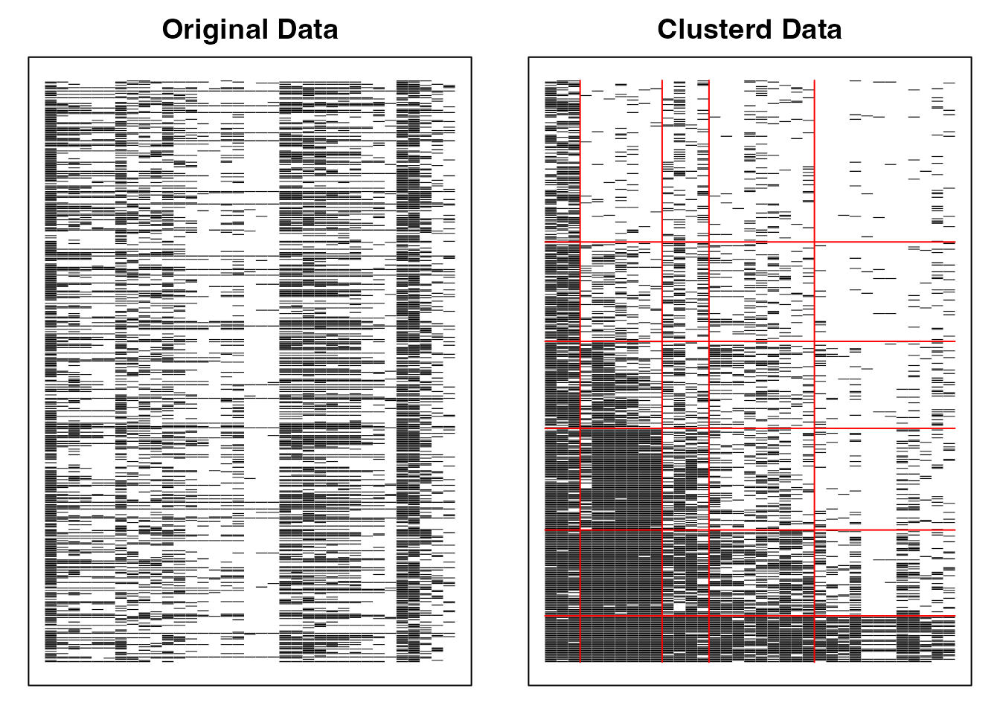
Biclustering() takes the data, the number of fields nfld, the number of classes/ranks ncls, and a method ("B" for biclustering, "R" for rank-clustering). Here we use J35S515, a sample dataset of 515 respondents on 35 items.
The array plot is shown. The left panel is the raw data — respondents on rows, items on columns, with black squares (■) for correct answers and white squares (□) for incorrect. The right panel is the post-analysis arrangement, grouping similar patterns by rank and by field.
Field and rank classifications can advise respondents on which areas of items they should answer correctly to advance to the next rank. Field and rank memberships are probabilistic (fuzzy clustering), enabling rank-up and rank-down odds for each respondent.
Visualisations of the field and rank membership matrices:
plot(result.Ranklustering, type = "FRP", nc = 2, nr = 3)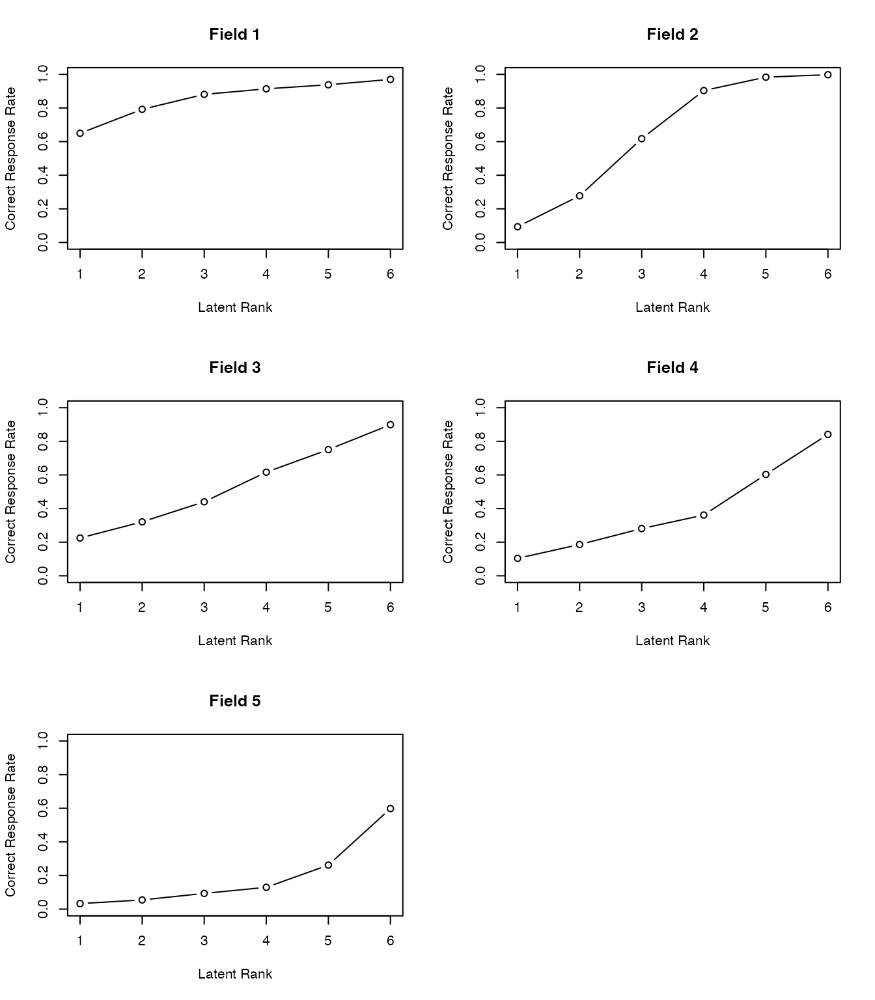
plot(result.Ranklustering, type = "RMP", students = 1:9, nc = 3, nr = 3)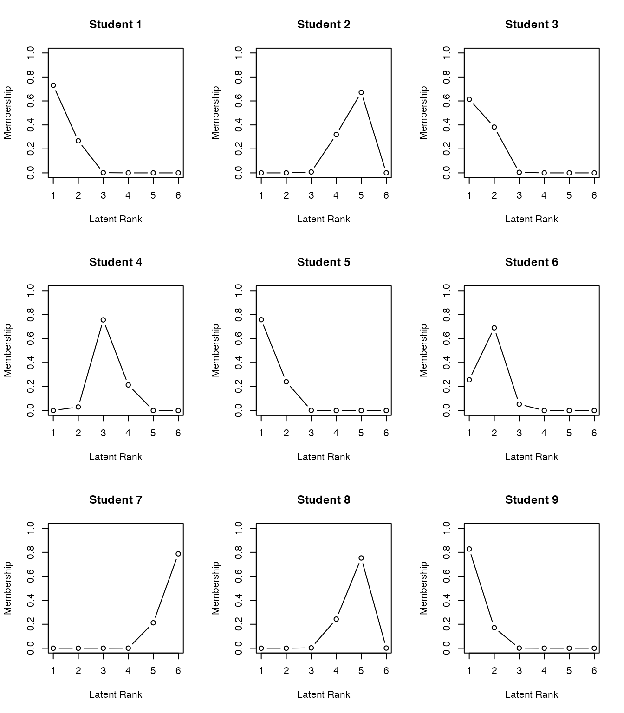
Polytomous biclustering models have also been developed and are a promising direction for psychological-scale analysis. Because clustering classifies based on surface response patterns without assuming a generative mechanism (in contrast to factor analysis or graded IRT), it avoids many of the theoretical worries surrounding latent-variable interpretation. Clustering of items also makes it straightforward to map composite or change scores to qualitative labels.
The exametrika package implements all twelve models in Shojima (2022); see the package documentation.
Multidimensional scaling (MDS) is, in one line, the recovery of a map from a distance matrix.
MDS divides into metric and non-metric. Metric MDS reads coordinates directly off the eigenvalues and eigenvectors of the (transformed) distance matrix and requires the data to be ratio-scale and error-free. The mathematical justification rests on the Young–Householder theorem (look it up if interested).
A metric-MDS example using R’s built-in eurodist data (distances between European cities) and the base function cmdscale():
result <- cmdscale(eurodist, k = 2)
# plot
plot(result[, 1], result[, 2],
type = "n",
xlab = "dimension 1", ylab = "dimension 2",
main = "MDS of European cities",
cex.main = 1.2,
cex.lab = 1.1
)
# annotate with city names
text(result[, 1], result[, 2],
labels = rownames(result),
cex = 0.8,
col = "darkblue",
font = 2
)
# grid
grid(lty = 2, col = "lightgray")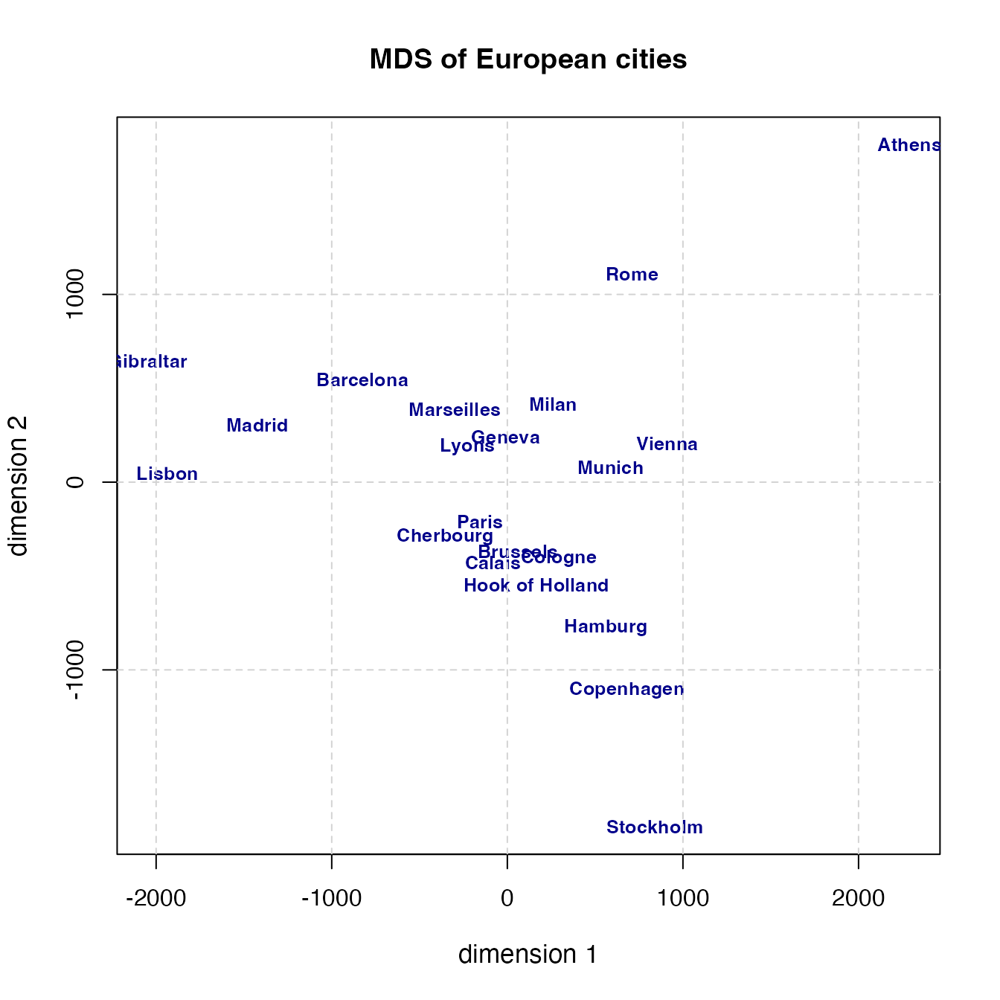
Athens sits at upper right and Stockholm at the bottom, which suggests the north–south axis is inverted, but otherwise the relative positions are recovered well. cmdscale()’s k selects the number of dimensions; we chose 2. Strictly the earth is a sphere, so \(k = 3\) would be more accurate, but for visualisation a low dimension is usual.
eurodist records actual physical distances, so ratio-scale, error-free data is plausible. In psychological applications, however, neither assumption typically holds — and there non-metric MDS is used. Non-metric MDS places objects in a multidimensional space so that the ordering of distances is preserved: writing the distance between objects \(i\) and \(j\) as \(d_{ij}\),
\[ d_{ij} < d_{kl} \to \delta_{ij} < \delta_{kl}, \]
where \(\delta_{ij}\) are the recovered coordinate distances. Kruskal’s classic non-metric MDS minimises a stress value
\[ \sum_{i > j} e_{ij}^2 = \sum_{ij} (\delta_{ij} - d_{ij})^2. \]
Many alternative objective functions have been proposed; in R, the smacof package (Scaling by MAjorising a COmplicated Function) is convenient.
An example using smacof’s FaceExp data — similarity ratings of facial expressions.
pacman::p_load(smacof)
# stress over dimensions 2 to 10
dimensions <- 2:10
stress_values <- numeric(length(dimensions))
for (i in seq_along(dimensions)) {
result_temp <- mds(FaceExp, ndim = dimensions[i], type = "ordinal")
stress_values[i] <- result_temp$stress
}
stress_values[1] 0.106248100 0.059778016 0.035605225 0.019262481 0.011722294 0.007084647
[7] 0.007084647 0.007084647 0.007084647# stress vs. dimensions
plot(dimensions, stress_values,
type = "b", pch = 16,
xlab = "number of dimensions", ylab = "stress",
main = "Stress vs. dimensions (facial expressions)",
cex.main = 1.1,
cex.lab = 1.0,
col = "blue", lwd = 2
)
grid(lty = 2, col = "lightgray")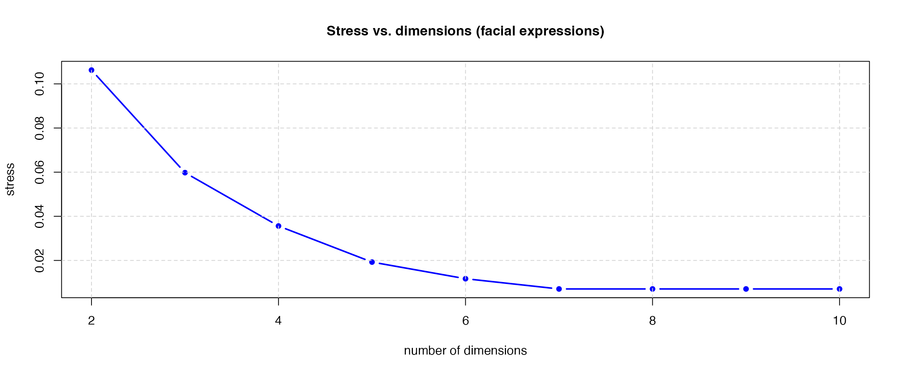
Common rules of thumb: stress below 0.05 is excellent; below 0.10, good; below 0.20, acceptable.
The plot suggests three dimensions are sufficient. Re-fit with ndim = 3 and type = "ordinal" (signalling ordinal-scale data):
# 3D MDS
result <- mds(FaceExp, ndim = 3, type = "ordinal")
result
Call:
mds(delta = FaceExp, ndim = 3, type = "ordinal")
Model: Symmetric SMACOF
Number of objects: 13
Stress-1 value: 0.06
Number of iterations: 73 # show pairs of axes
# dim 1 vs dim 2
plot(result$conf[, 1], result$conf[, 2],
type = "n",
xlab = "dim 1", ylab = "dim 2",
main = paste("dim 1 vs dim 2\nStress =", round(result$stress, 3)),
cex.main = 1.0,
cex.lab = 0.9
)
text(result$conf[, 1], result$conf[, 2],
labels = rownames(result$conf),
cex = 0.7,
col = "darkblue",
font = 2
)
grid(lty = 2, col = "lightgray")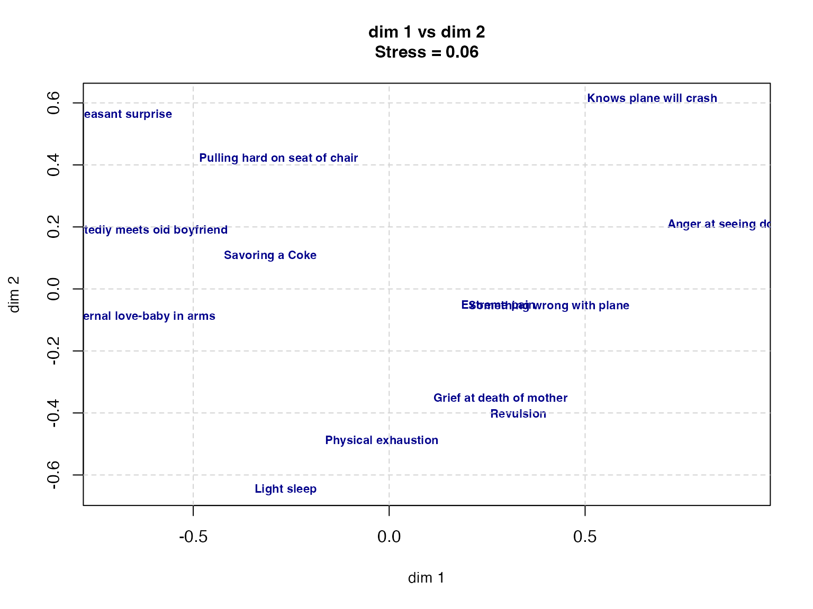
# dim 1 vs dim 3
plot(result$conf[, 1], result$conf[, 3],
type = "n",
xlab = "dim 1", ylab = "dim 3",
main = paste("dim 1 vs dim 3\nStress =", round(result$stress, 3)),
cex.main = 1.0,
cex.lab = 0.9
)
text(result$conf[, 1], result$conf[, 3],
labels = rownames(result$conf),
cex = 0.7,
col = "darkblue",
font = 2
)
grid(lty = 2, col = "lightgray")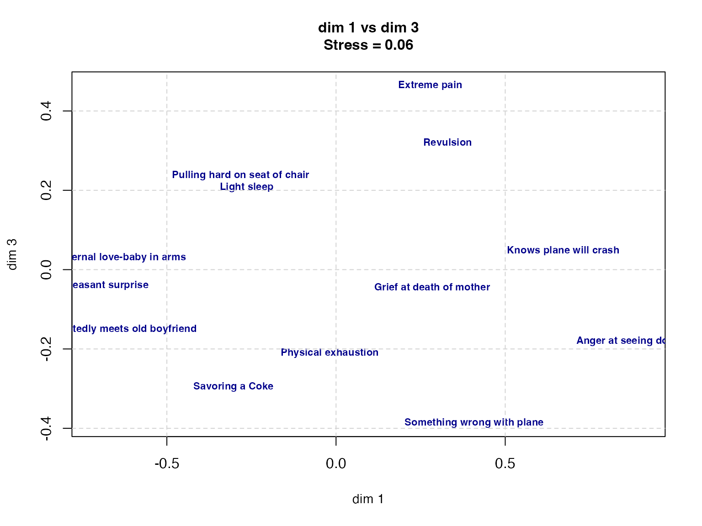
# dim 2 vs dim 3
plot(result$conf[, 2], result$conf[, 3],
type = "n",
xlab = "dim 2", ylab = "dim 3",
main = paste("dim 2 vs dim 3\nStress =", round(result$stress, 3)),
cex.main = 1.0,
cex.lab = 0.9
)
text(result$conf[, 2], result$conf[, 3],
labels = rownames(result$conf),
cex = 0.7,
col = "darkblue",
font = 2
)
grid(lty = 2, col = "lightgray")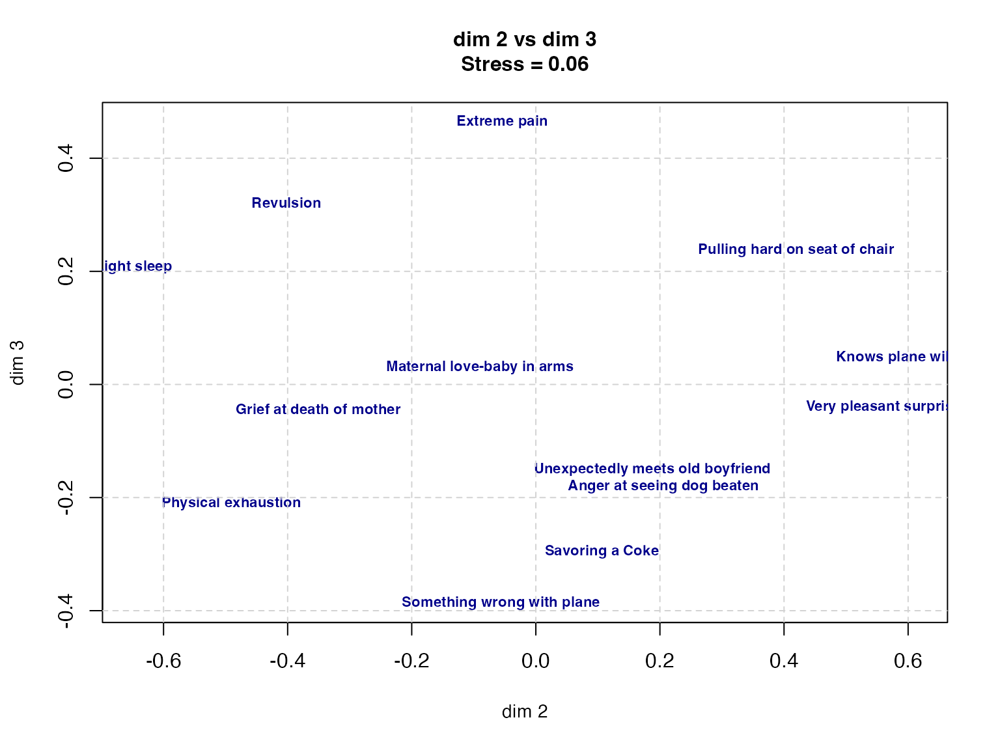
print(result$conf) D1 D2 D3
Grief at death of mother 0.28389211 -0.35088341 -0.04383041
Savoring a Coke -0.30306573 0.10620276 -0.29595552
Very pleasant surprise -0.71552867 0.56031573 -0.04008618
Maternal love-baby in arms -0.63827700 -0.09006026 0.02975313
Physical exhaustion -0.01879485 -0.49089080 -0.21059225
Something wrong with plane 0.40829233 -0.05617713 -0.38685372
Anger at seeing dog beaten 0.90768476 0.20575384 -0.18027858
Pulling hard on seat of chair -0.28180980 0.41937543 0.23764181
Unexpectedly meets old boyfriend -0.65807066 0.18760808 -0.15097801
Revulsion 0.32995517 -0.40195569 0.32170945
Extreme pain 0.27856073 -0.05436048 0.46450844
Knows plane will crash 0.67130146 0.61301964 0.04768550
Light sleep -0.26413984 -0.64794771 0.20727634The plot reveals the structure of perceptual similarity among facial expressions. The first dimension can be read as valence (pleasant/unpleasant), the second as arousal, and the third as naturalness.
For more objective dimension labels, correlate the coordinates with external variables. Since a correlation is \(\cos\theta\) between vectors, plotting auxiliary lines for external variables along each axis makes the labelling easier. See グリム and ヤーノルド ([1994] 2016) for details.
Now to co-occurrence-matrix methods. A co-occurrence matrix is a cross-tabulation of categorical data, encoding how often categories co-occur. The co-occurrence is then treated as a measure of category similarity.
The applicability is broad. The best-known case is text mining.
Text mining is the collective name for a set of techniques for statistically processing natural-language data — novels, web articles, free-text survey responses, interview transcripts — to extract meaningful patterns.
In Japanese, text mining is essentially the combination of morphological analysis and multivariate analysis. Unlike English, Japanese is not space-segmented, so a continuous string must first be split into parts of speech. Splitting and recovering base forms is what morphological analysis does, and it requires a Japanese dictionary-based engine: MeCab, JANOME, ChaSen, and so on. R and Python packages exist for invoking these engines.
Morphological analysis produces a document-term matrix — counts of each word’s occurrence in each document. The matrix is typically large and sparse. One operates on it via singular value decomposition, or first converts to a square word × word co-occurrence matrix for downstream multivariate analysis.
Any multivariate technique can be applied. Cluster analysis and MDS, both discussed above, are common. The matrix tends to be large enough that standard multivariate methods fit poorly in low dimensions; one either accepts the worse fit for visualisation, or uses a method such as a self-organising map (SOM)2 to force a categorisation.
Modern text mining at scale often replaces the morphological unit with the token3, leveraging big data and machine learning.
A morphological-analysis-based example: the RMeCab package is a common route in R; install MeCab (the engine) first, then RMeCab.4 5 The newer gibasa package bundles a MeCab binary internally, so no external setup is needed; it is on CRAN.6 We use gibasa here.
Load the package and morphologically analyse a sentence:
pacman::p_load(tidyverse, gibasa)
text <- "私は昨日，カフェでコーヒーを飲んだ。"
dat <- gibasa::tokenize(text)
dat# A tibble: 11 × 5
doc_id sentence_id token_id token feature
<fct> <int> <int> <chr> <chr>
1 1 1 1 私 名詞,代名詞,一般,*,*,*,私,ワタクシ,ワタクシ……
2 1 1 2 は 助詞,係助詞,*,*,*,*,は,ハ,ワ
3 1 1 3 昨日 名詞,副詞可能,*,*,*,*,昨日,キノウ,キノー
4 1 1 4 ， 記号,読点,*,*,*,*,，,，,，
5 1 1 5 カフェ 名詞,一般,*,*,*,*,カフェ,カフェ,カフェ
6 1 1 6 で 助詞,格助詞,一般,*,*,*,で,デ,デ
7 1 1 7 コーヒー 名詞,一般,*,*,*,*,コーヒー,コーヒー,コーヒー……
8 1 1 8 を 助詞,格助詞,一般,*,*,*,を,ヲ,ヲ
9 1 1 9 飲ん 動詞,自立,*,*,五段・マ行,連用タ接続,飲む,ノン,ノン……
10 1 1 10 だ 助動詞,*,*,*,特殊・タ,基本形,だ,ダ,ダ
11 1 1 11 。 記号,句点,*,*,*,*,。,。,。 tokenize() splits the string into morphemes; each morpheme’s properties (part of speech, lemma, etc.) live in the feature column. prettify() parses this MeCab output into tidy columns.
For real text mining, particles and punctuation marks are uninformative, and verbs are best treated by their base form. Piping these steps:
gibasa::prettify(dat, col_select = c("POS1", "Original")) |>
dplyr::filter(POS1 %in% c("名詞", "動詞", "形容詞"))# A tibble: 5 × 6
doc_id sentence_id token_id token POS1 Original
<fct> <int> <int> <chr> <chr> <chr>
1 1 1 1 私 名詞 私
2 1 1 3 昨日 名詞 昨日
3 1 1 5 カフェ 名詞 カフェ
4 1 1 7 コーヒー 名詞 コーヒー
5 1 1 9 飲ん 動詞 飲む The filter retains nouns (名詞), verbs (動詞), and adjectives (形容詞).
That was a single sentence. A more realistic example: short reviews of Kyoto ramen.
The workflow:
# Kyoto ramen reviews (in Japanese)
ramen_reviews <- c(
"京都ラーメンは意外とコッテリしたのが多いんだよね。",
"濃厚なスープと細麺の組み合わせが絶妙で美味しかった。",
"ドロドロとした鶏ガラベースのスープが京都らしくて好み。",
"老舗のラーメンは深いコクがあり,麺との絡みが良くて好き。",
"京都駅近くの店で食べた醤油ラーメンのチャーシューが柔らかくて最高。",
"京都ラーメンといえば天下一品のコッテリが魅力的。",
"背脂がたっぷりのラーメンも京都で食べると格別だった。",
"細麺とスープのバランスが絶妙で,また食べたくなる味。",
"京都らしい濃い醤油ラーメンに九条ネギがよく合っていた。",
"老舗の店主が作る丁寧なラーメンは心に残る味わいだった。"
)
# tokenise, select parts of speech, and count per document
dat_count <- ramen_reviews |>
# tokenise into morphemes
gibasa::tokenize() |>
# pull out POS and lemma
gibasa::prettify(col_select = c("POS1", "Original")) |>
# keep only nouns and adjectives
dplyr::filter(POS1 %in% c("名詞", "形容詞")) |>
# tidy up
dplyr::mutate(
doc_id = forcats::fct_drop(doc_id),
token = dplyr::if_else(is.na(Original), token, Original)
) |>
# per-document, per-word counts
dplyr::count(doc_id, token)
# document-term matrix
dtm <- dat_count |>
tidyr::pivot_wider(
id_cols = doc_id,
names_from = token,
values_from = n,
values_fill = 0
)
dtm# A tibble: 10 × 46
doc_id の ん コッテリ ラーメン 京都 多い スープ 濃厚 細
<fct> <int> <int> <int> <int> <int> <int> <int> <int> <int>
1 1 1 1 1 1 1 1 0 0 0
2 2 0 0 0 0 0 0 1 1 1
3 3 0 0 0 0 1 0 1 0 0
4 4 0 0 0 1 0 0 0 0 0
5 5 0 0 0 1 1 0 0 0 0
6 6 0 0 1 1 1 0 0 0 0
7 7 0 0 0 1 1 0 0 0 0
8 8 0 0 0 0 0 0 1 0 1
9 9 0 0 0 1 1 0 0 0 0
10 10 0 0 0 1 0 0 0 0 0
# ℹ 36 more variables: 組み合わせ <int>, 絶妙 <int>, 美味しい <int>, 麺 <int>,
# ガラベース <int>, 好み <int>, 鶏 <int>, `,` <int>, コク <int>, 好き <int>,
# 深い <int>, 老舗 <int>, 良い <int>, チャーシュー <int>, 店 <int>,
# 最高 <int>, 柔らかい <int>, 近く <int>, 醤油 <int>, 駅 <int>,
# 天下一品 <int>, 的 <int>, 魅力 <int>, 格別 <int>, 背 <int>, 脂 <int>,
# バランス <int>, 味 <int>, ネギ <int>, 九 <int>, 条 <int>, 濃い <int>,
# 丁寧 <int>, 味わい <int>, 店主 <int>, 心 <int>distance_matrix <- dist(t(dtm[, -1]))
# classical MDS in 2 dimensions
mds_result <- cmdscale(distance_matrix, k = 2)
# visualise (ggrepel avoids label overlap)
pacman::p_load(ggrepel)
mds_df <- data.frame(
dim1 = mds_result[, 1],
dim2 = mds_result[, 2],
word = rownames(mds_result)
)
ggplot(mds_df, aes(x = dim1, y = dim2)) +
geom_point(color = "darkblue", size = 2, alpha = 0.7) +
geom_text_repel(
aes(label = word),
size = 3.5,
color = "darkblue",
fontface = "bold",
box.padding = 0.3,
point.padding = 0.3,
max.overlaps = Inf
) +
labs(
title = "MDS of ramen-review words",
x = "dim 1",
y = "dim 2"
) +
theme_minimal() +
theme(
plot.title = element_text(hjust = 0.5, size = 14),
panel.grid = element_line(linetype = "dashed", color = "lightgray")
)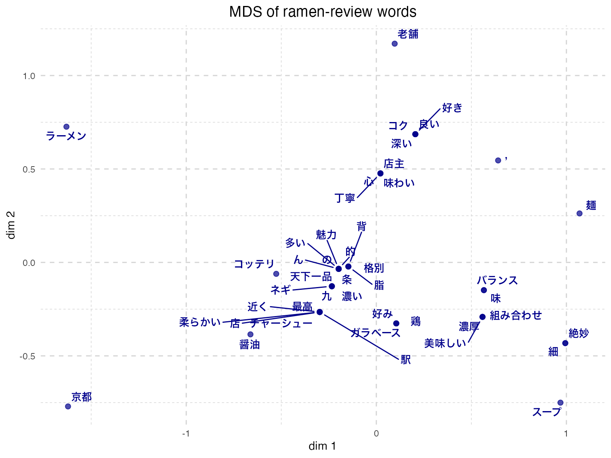
Similar words are placed near each other. “Noodles” (麺) and “soup” (スープ), or “combination” (組み合わせ) and “balance” (バランス), cluster together, suggesting meaningful proximity.
The morpheme-based approach has limits: a proper noun like 九条ネギ (“Kujo green onion”) is mis-split into 九 (“nine”) and 条 (“article”). Dictionary customisation or rules for extracting specific terms become necessary. Text mining via morphological analysis spends considerable pre-cleaning effort.
This example used only 10 short reviews. Production text mining typically operates on much larger corpora and learned dictionaries. The synergy with generative AI is also strong (large language models have, in a real sense, already learned natural language), and text-mining workflows that bypass morphological analysis and explicit statistical modelling are likely to become mainstream.
Finally, methods based on the partial-correlation matrix.
(Pearson) correlation matrices underpin many linear models, but when a third variable \(Z\) influences both \(X\) and \(Y\), the observed correlation between \(X\) and \(Y\) may be spuriously inflated; the correlation drops once \(Z\) is controlled for.
The statistical control regresses \(X\) on \(Z\) and \(Y\) on \(Z\), takes the residuals \(R_X\) and \(R_Y\), and computes their correlation — the partial correlation of \(X\) and \(Y\) given \(Z\), often regarded as capturing the more genuine relationship. With many variables, the partial correlation between any two variables, given the rest, can be obtained without running each regression individually via the following matrix identity. Let \(\mathbf{R}\) be the correlation matrix; the entries of the partial-correlation matrix \(\mathbf{P}\) are
\[p_{ij} = -\frac{r^{ij}}{\sqrt{r^{ii} r^{jj}}},\]
where \(r^{ij}\) is the \((i, j)\) entry of \(\mathbf{R}^{-1}\).
Factor analysis starts from a correlation matrix and gathers strongly related variables into factors. Graphical modelling inverts this idea: starting from the partial-correlation matrix, it removes the weak ties and visualises only the genuine pairwise relationships.
In the quantitative case the method works directly on the partial-correlation matrix; in the categorical case it tests conditional independence via multi-way contingency tables. Because the result is visualised as a network of nodes and edges, the technique is also called network analysis.
Psychology often interprets factors as theoretical constructs. From a systems perspective, however, a “construct” is not a thing that exists on its own but a synthesis of many phenomena — and the network-analytic approach may be a better fit. For the theoretical case for combining systems-thinking with network methods, see アデラ＝マリア et al. ([2022] 2024).
A concrete example. Compute correlation and partial-correlation matrices on the Big Five data:
pacman::p_load(psych, corrplot, RColorBrewer)
# Big Five data; first 25 items only
bfi <- psych::bfi[, 1:25]
bfi_clean <- na.omit(bfi)
# 1. correlation matrix
cor_matrix <- cor(bfi_clean)
# 2. partial-correlation matrix (via matrix inversion)
R_inv <- solve(cor_matrix)
partial_cor_matrix <- matrix(0, nrow = nrow(R_inv), ncol = ncol(R_inv))
for (i in 1:nrow(R_inv)) {
for (j in 1:ncol(R_inv)) {
if (i != j) {
partial_cor_matrix[i, j] <- -R_inv[i, j] / sqrt(R_inv[i, i] * R_inv[j, j])
}
}
}
diag(partial_cor_matrix) <- 1
rownames(partial_cor_matrix) <- rownames(cor_matrix)
colnames(partial_cor_matrix) <- colnames(cor_matrix)# side-by-side heatmaps
par(mfrow = c(1, 2))
# correlation matrix heatmap
corrplot(cor_matrix,
method = "color",
order = "alphabet",
tl.cex = 0.6,
tl.col = "black",
col = brewer.pal(n = 8, name = "RdYlBu"),
title = "Correlation matrix",
mar = c(0, 0, 2, 0),
cl.pos = "n"
)
# partial-correlation matrix heatmap
corrplot(partial_cor_matrix,
method = "color",
order = "alphabet",
tl.cex = 0.6,
tl.col = "black",
col = brewer.pal(n = 8, name = "RdYlBu"),
title = "Partial-correlation matrix",
mar = c(0, 0, 2, 0)
)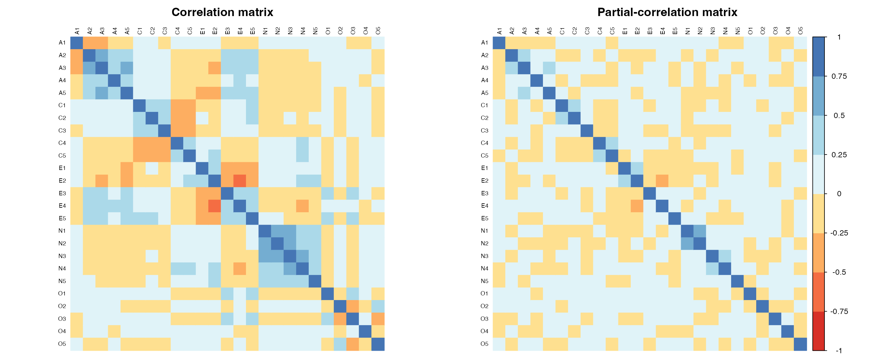
par(mfrow = c(1, 1))Side by side, the patterns differ in places.
A network can be built from either matrix; we use the partial-correlation matrix here.
The qgraph package handles estimation and drawing. We use graph = "glasso", the Gaussian graphical model with L1 regularisation that zeroes out unimportant pairwise relationships, cutting paths by BIC. The spring layout produces a natural arrangement; other layouts are available.
pacman::p_load(qgraph)
BICgraph <- qgraph(
partial_cor_matrix,
graph = "glasso",
sampleSize = nrow(bfi),
tuning = 0, # 0 selects by BIC; larger = sparser
layout = "spring",
title = "BIC",
threshold = TRUE,
details = TRUE
)Note: Network with lowest lambda selected as best network: assumption of sparsity might be violated.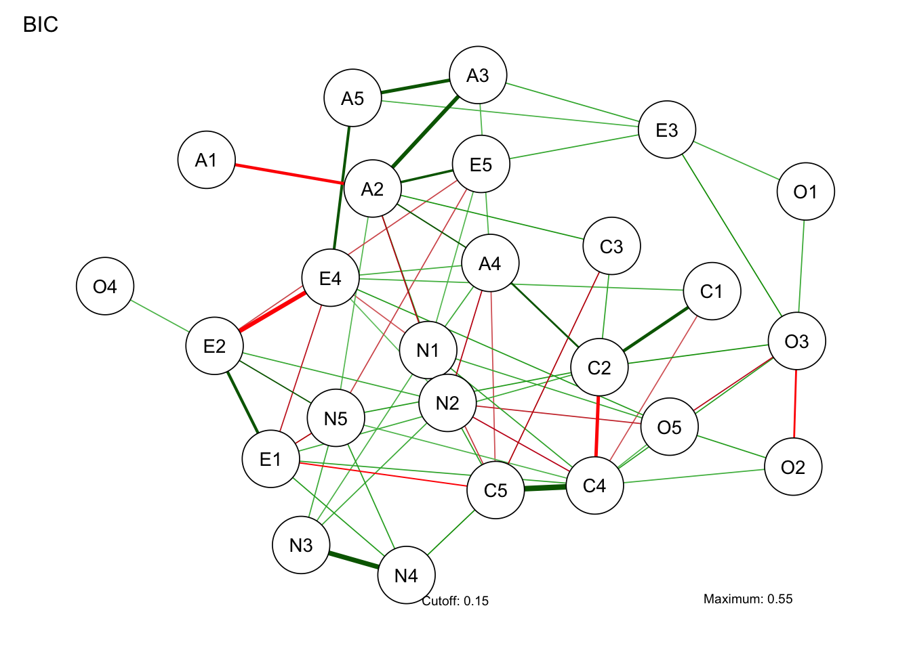
Network analysis is not about reducing to a “factor” — it presents the whole picture as is. That can be hard to read at first glance, so centrality indices are used to identify central nodes and tightly tied pairs:
centralityPlot(
list(BIC = BICgraph),
include = "all"
)Warning: Removed 1 row containing missing values or values outside the scale range
(`geom_path()`).Warning: Removed 1 row containing missing values or values outside the scale range
(`geom_point()`).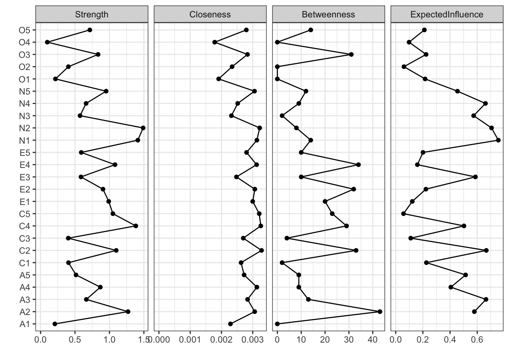
The indices:
Network models have many estimation refinements and extensions (dynamic, time-series). Plenty to look forward to.
Practise the techniques of this chapter (cluster analysis, MDS, network analysis) on the following.
Using purchase-behaviour data from 100 consumers (expenditure on five product categories), run both hierarchical clustering and k-means and compare the results. Only a subset is shown; the full data are at consumer_data.csv.
consumer_id food clothing books electronics travel
1 C001 7.159287 2.6886403 0.7544844 1.4639778 2.8421412
2 C002 7.654734 2.5539177 0.1000000 0.8720764 1.6853630
3 C003 10.338062 1.9380883 1.5028693 0.1656465 0.1134270
4 C004 8.105763 1.6940373 0.6453996 1.1958188 0.1823988
5 C005 8.193932 1.6195290 0.6559957 2.2351973 0.1000000
6 C006 10.572597 1.3052930 1.5127857 1.0397224 1.3629122
7 C007 8.691374 1.7920827 0.8576135 1.9863715 0.2458933
8 C008 6.102408 0.7346036 0.3896411 0.2056938 2.8255001
9 C009 6.969721 4.1689560 1.0906517 1.4555504 4.5201307
10 C010 7.331507 3.2079620 0.9305543 1.9155258 0.4555634Steps:
Using similarity ratings among ten major Japanese cities, visualise them in 2D with MDS. Data at city_similarity.csv.
Tokyo Osaka Nagoya Sapporo Sendai
Tokyo 10 6 7 2 5
Osaka 6 10 6 2 3
Nagoya 7 6 10 2 4
Sapporo 2 2 2 10 7
Sendai 5 3 4 7 10Steps:
ggplot and ggrepel.Using ten personality items (Big Five, two items per factor), visualise the inter-item structure as a network and identify central items via centrality indices. Data at personality_data.csv.
participant_id Extra1 Extra2 Agree1 Agree2 Consc1 Consc2 Neuro1 Neuro2 Open1
1 P001 2 2 4 4 2 2 1 1 1
2 P002 5 5 2 3 3 2 5 3 3
3 P003 5 5 4 4 4 5 2 2 1
4 P004 5 4 2 2 6 5 2 2 3
5 P005 3 6 4 5 6 7 3 6 3
6 P006 3 4 3 4 5 5 6 4 5
7 P007 1 2 5 5 6 6 1 4 4
8 P008 5 7 4 4 7 7 7 7 5
9 P009 2 1 3 4 7 7 1 4 4
10 P010 4 6 4 5 3 2 4 4 2
Open2
1 1
2 4
3 3
4 4
5 4
6 5
7 5
8 3
9 5
10 1Steps:
glasso.One might ask why the buggy method is not removed. "ward.D" was R’s only Ward implementation before version 3.0.3 and was later found to miscompute the variance. R kept the original code for transparency — an example of free, open-source software’s self-correction. In contrast, the author once reported buggy behaviour in a proprietary statistical product to the vendor and was told to “buy the next version, in which it is fixed.” The author parted ways with that product accordingly. Paid support is not a guarantee of correctness in scientific software.↩︎
A self-organising map (SOM), also called a Kohonen map after its developer Teuvo Kohonen of Finland, is an unsupervised learning algorithm that maps high-dimensional data to a two-dimensional grid while preserving structure for visualisation.↩︎
A token in machine learning is the minimal semantic unit of text — not necessarily a morpheme, but a numerical-vector unit segmented by similarity.↩︎
RMeCab GitHub: https://github.com/IshidaMotohiro/RMeCab↩︎
MeCab official site: http://taku910.github.io/mecab/↩︎
gibasa introduction: https://zenn.dev/paithiov909/articles/gibasa-intro↩︎